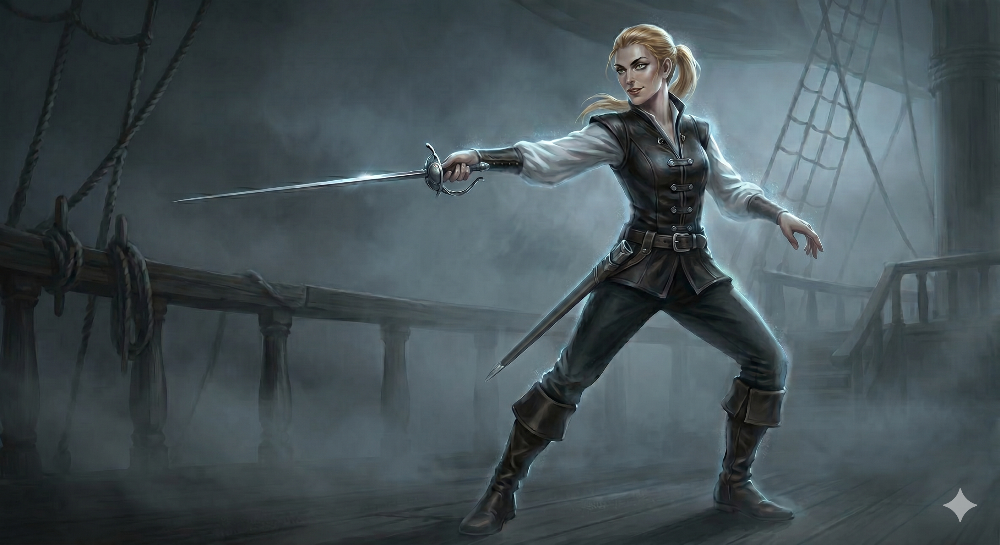

Appears in: Couch Potato Crisis
Profile

-
Appears in: Couch Potato Crisis
-
Nature: Figment — summoned by [Pan / Panella Branford](./character-pan-panella-branford.html) as a combat-specialist swashbuckler
-
Class: Swashbuckler (agile dueling class associated with unstable footing, dirty fighting, and fast blade work)
-
Personality: Unapologetically, almost cheerfully unfair. Where Ari embodies Pan’s protective love and Igrius her expanding power, Pollyanna embodies her tactical mind and her willingness to fight dirty when the situation demands it. She is described as “elegant” and “severe” — a combat specialist who rejects fair play not out of cruelty but out of pragmatism. Her defining philosophy, delivered while training Tasha, is blunt and absolute: “You can’t win by playing fair.” As a figment born from a child’s imagination, she represents the part of Pan that has learned the world does not reward honour — it rewards preparation, positioning, and ruthlessness. She carries herself with the confident swagger of someone who has already decided the fight is over before it begins.
-
Backstory: Pollyanna was summoned by Pan during the events of Crisis, debuting in the chapter named after her (Chapter 14 — Pollyanna). She is Pan’s second combat figment after Ari, and unlike Ari — who was born from desperate infantile need — Pollyanna was a deliberate creation: a tactical combat tool shaped by Pan’s growing mastery of the summoner class. Her swashbuckler class and fighting philosophy reflect Pan’s hard-won understanding that Etheria’s dangers cannot be met with good intentions alone. She exists only when Pan summons her, sharing the fundamental fragility of all figments — dependent on a child’s continued imagination and summoner power to remain in reality.
-
Significant story events:
- Chapter 14 — Pollyanna (Crisis): Debut. Pan summons Pollyanna for the first time, revealing her swashbuckler figment as an elegant, severe combat specialist who explicitly rejects fair play as a strategy. The chapter named after her marks Pollyanna as significant enough to warrant a chapter title in her own right.
- Into Zhakara (Crisis): Pollyanna trains Tasha in swashbuckler combat philosophy, teaching her the art of dirty fighting and tactical ruthlessness. Her central lesson — “You can’t win by playing fair” — expands Tasha’s combat toolkit and represents a philosophical shift for the character who began the series as a reluctant couch potato.
- Chapter 30 — The End of Zhakara (Crisis): Pollyanna fights in the climactic battle alongside Ari and Igrius, all three of Pan’s figments active simultaneously. This three-figment deployment is described as “a testament to how far Pan’s summoner power has grown” — Pollyanna’s presence in the final battle validates her role as a genuine combat asset, not merely a training tool.
-
Notable Quotes:
“You can’t win by playing fair.” — Into Zhakara / Pollyanna chapter (Crisis). Pollyanna summarizes her swashbuckler philosophy while training Tasha — the line that defines her entire combat worldview.
[Pollyanna’s combat instruction during training emphasises exploiting unstable footing, striking from disadvantageous angles, and refusing to let the opponent set the terms of engagement. These teachings are reflected in Tasha’s expanded tactical toolkit throughout the remainder of Crisis. Additional direct quotes would need to be sourced from the book text of the Pollyanna and Into Zhakara chapters.]
-
Relationships:
- [Pan / Panella Branford](./character-pan-panella-branford.html) (summoner / creator): Pollyanna is Pan’s figment — born from the child’s tactical imagination and sustained by her summoner power. She represents the part of Pan that has learned to fight without quarter, shaped by two books’ worth of hard experience.
- [Tasha Singleton](./character-tasha-singleton.html) (trainee / ally): Pollyanna trains Tasha in swashbuckler combat during the advance into Zhakara, teaching her to abandon fair play in favour of pragmatism. This training permanently expands Tasha’s combat identity.
- Ari / Aralogos (fellow figment): Both are Pan’s figments, but where Ari is protective and paternal, Pollyanna is aggressive and tactical. They complement each other in combat — Ari as the frontline anchor, Pollyanna as the fast, dirty striker.
- Igrius (fellow figment): Pan’s third figment, a fire-based summon. Alongside Ari, the three form Pan’s complete figment roster, deployed together for the first time in the End of Zhakara battle.
-
References: Couch Potato Crisis: Into Zhakara, Pollyanna, The End of Zhakara